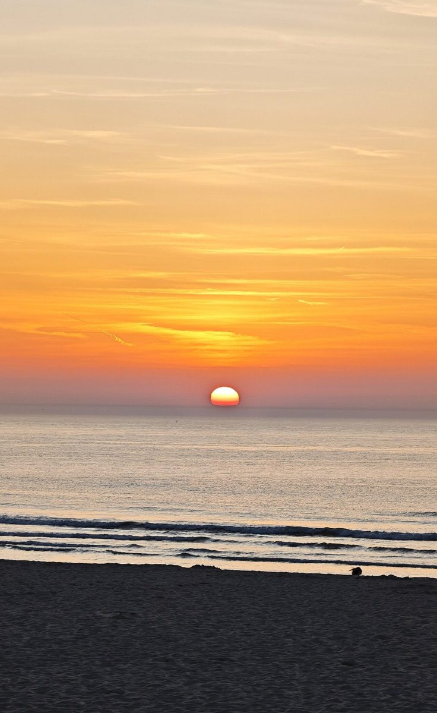
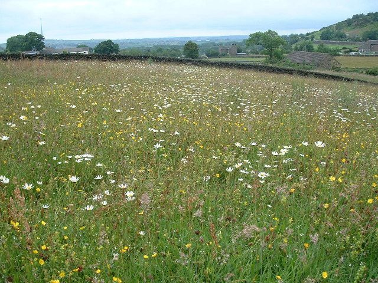
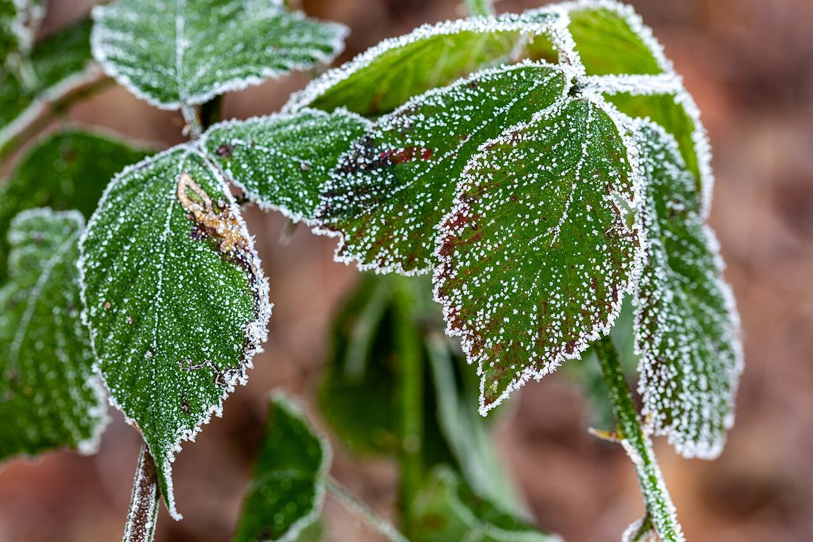
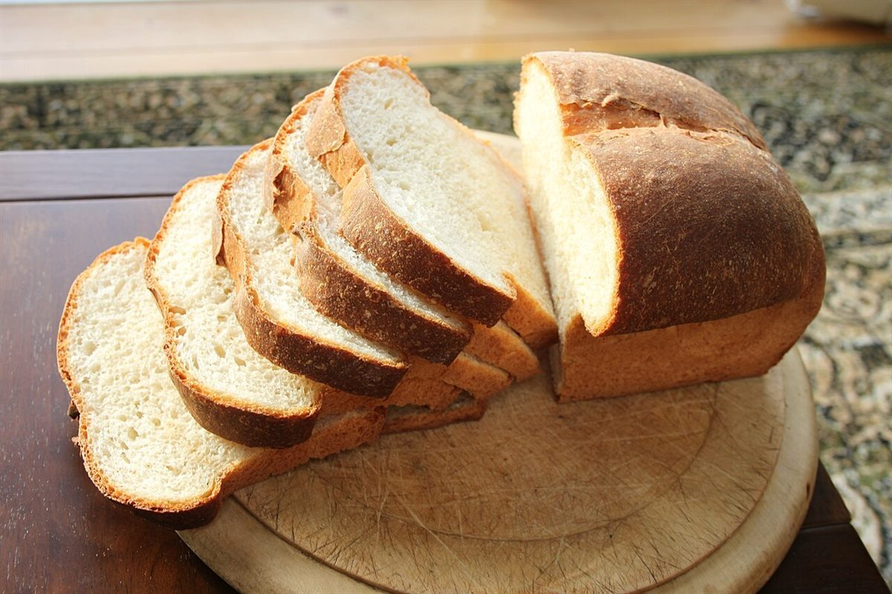

パンセゾンpain saisons
パン屋 / 千葉県船橋市二和東
パンセゾン
千葉県船橋市二和東にあるパン屋「パンセゾン」のご案内ページです。営業時間やメニューなど、詳しいことは準備中。電話は 090-7263-9622、まずはInstagramもどうぞ。
制作側の連想
「セゾン」から、二×二の四季。
店名の由来は分かりません。制作側は「セゾン」という響きを「季節」と結びつけ、Instagramのアカウント名の最後に「4」が付いていることからも、春夏秋冬の4つを連想しました。そこでこのサイトは、四角を2×2に並べた「四季のタイル」の作りにしています。お店の理念・由来とは無関係な、制作側の連想です。
春printemps
チューリップ、勿忘草。春のイメージで選んだ写真です(国外・撮影地不明)。

夏été
ひまわり、ラベンダー、夕日の海、草地、コスモス。夏のイメージで選んだ写真です(国外・撮影地不明)。




秋automne
カエデ、かぼちゃ、黄葉の並木、霧の林。秋のイメージで選んだ写真です(国外・撮影地不明)。


冬hiver
霜、氷、雪の林。冬のイメージで選んだ写真です(国外・撮影地不明)。



パンのイメージ
パンの写真はフリー素材です。
下の写真はパン一般のイメージで、パンセゾンの商品ではありません。お店で扱うパンの種類は未確認です。



ご案内
お店のこと(確認できたものだけ)
| 所在地 | 〒274-0805 千葉県船橋市二和東５丁目２５−３４ |
|---|---|
| 電話 | 090-7263-9622 Googleマップ掲載の番号 |
| 営業時間 | 準備中 |
| 定休日 | 準備中 |
| ご予約 | 準備中 |
| 駐車場 | 準備中 |
| SNS | Instagram @pain.saisons4 |